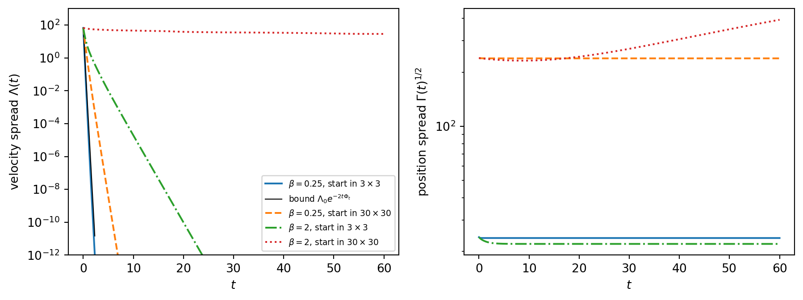

import numpy as np
import matplotlib.pyplot as plt
from scipy.integrate import solve_ivp
def cucker_smale_rhs(t, state, k, K, sigma, beta):
x = state[:2 * k].reshape(k, 2)
v = state[2 * k:].reshape(k, 2)
d2 = ((x[:, None, :] - x[None, :, :]) ** 2).sum(axis=2)
a = K / (sigma**2 + d2) ** beta # weights a_ij
dv = a @ v - a.sum(axis=1)[:, None] * v # sum_j a_ij (v_j - v_i)
return np.concatenate([v.ravel(), dv.ravel()])
def simulate(beta, spread, k=20, K=0.5, sigma=1.0, T=60.0, seed=1, vmax=0.5):
rng = np.random.RandomState(seed)
x0 = rng.uniform(0, spread, (k, 2))
v0 = rng.uniform(-vmax, vmax, (k, 2))
t_eval = np.linspace(0, T, 601)
sol = solve_ivp(cucker_smale_rhs, (0, T), np.concatenate([x0.ravel(), v0.ravel()]),
t_eval=t_eval, args=(k, K, sigma, beta), rtol=1e-9, atol=1e-11)
x = sol.y[:2 * k].T.reshape(-1, k, 2)
v = sol.y[2 * k:].T.reshape(-1, k, 2)
return sol.t, x, v
def spreads(x, v):
"""Gamma and Lambda of the spreads equation, for every saved time."""
gamma = 0.5 * ((x[:, :, None, :] - x[:, None, :, :]) ** 2).sum(axis=(1, 2, 3))
lam = 0.5 * ((v[:, :, None, :] - v[:, None, :, :]) ** 2).sum(axis=(1, 2, 3))
return gamma, lamFlocking Without Noise: The Cucker–Smale Model
Module 2: Synchronization and Collective Behaviour
NoteReading
This page is optional. The Vicsek model and the Couzin model are studied by simulation. Cucker and Smale (2007) propose a flocking model for which one can prove that the birds end up with a common velocity. The price is a different structure: every bird listens to every other bird, with a weight that decays with distance, and the birds have inertia.
The model
Take \(k\) birds with positions \(\mathbf{x}_i(t) \in \mathbb{R}^d\) and velocities \(\mathbf{v}_i(t) \in \mathbb{R}^d\). Each bird accelerates toward the velocities of the others, weighted by how close they are (Cucker and Smale 2007):
\[ \dot{\mathbf{x}}_i = \mathbf{v}_i, \qquad \dot{\mathbf{v}}_i = \sum_{j=1}^{k} a_{ij}\,(\mathbf{v}_j - \mathbf{v}_i), \tag{1}\]
\[ a_{ij} = \frac{K}{\left(\sigma^2 + \|\mathbf{x}_i - \mathbf{x}_j\|^2\right)^{\beta}}, \qquad K, \sigma > 0,\ \beta \ge 0. \tag{2}\]
The exponent \(\beta\) controls how fast the influence decays with distance. Three differences with the Vicsek model are worth noting.
| Vicsek | Cucker–Smale | |
|---|---|---|
| Speed | constant, only the heading changes | free, the birds have inertia |
| Interaction graph | \(a_{ij} \in \{0, 1\}\) (within radius \(r\)), changes in time | all pairs, weights \(a_{ij} > 0\) that decay with distance |
| Noise | yes, with strength \(\eta\) | none |
| Time | discrete | continuous (a discrete version is also given in the paper) |
| Result | simulation, order–disorder transition | theorem: flocking for every initial condition if \(\beta < 1/2\) |
The paper makes the contrast explicit: the Vicsek weights correspond to the step function \(\eta(y) = 1\) for \(y \le r^2\) and \(0\) otherwise, whereas Equation 2 decreases continuously. In the Vicsek case, convergence depends on the connectivity of the whole sequence of interaction graphs. In the Cucker–Smale case the graph is always complete, so one can work directly with the initial state (Cucker and Smale 2007).
Flocking and the two spreads
Measure the spread of the flock in velocity and in position by
\[ \Lambda(t) = \frac12 \sum_{i \ne j} \|\mathbf{v}_i - \mathbf{v}_j\|^2, \qquad \Gamma(t) = \frac12 \sum_{i \ne j} \|\mathbf{x}_i - \mathbf{x}_j\|^2 . \tag{3}\]
The flock has reached a common velocity when \(\Lambda(t) \to 0\), and it stays together when \(\Gamma(t)\) remains bounded. Theorem 2 of Cucker and Smale (2007) gives sufficient conditions on the initial values \(\Gamma_0\) and \(\Lambda_0\):
- if \(\beta < 1/2\), the flock converges for every initial condition;
- if \(\beta = 1/2\), it converges when \(\Lambda_0\) is small enough compared with \(K\);
- if \(\beta > 1/2\), it converges when an explicit inequality linking \(\Gamma_0\), \(\Lambda_0\), \(K\), \(\sigma\) and \(\beta\) holds. Roughly, the flock must start compact enough for its members to feel each other.
These conditions are sufficient, not necessary. The key step of the proof is an energy inequality. Let \(\phi_t\) be the Fiedler number (the second smallest eigenvalue) of the weighted graph Laplacian \(L_{\mathbf{x}} = D - A\) of the weights \(a_{ij}(t)\), and \(\Phi_t = \min_{0 \le \tau \le t} \phi_\tau\). Then
\[ \Lambda(t) \le \Lambda_0\, e^{-2 t \Phi_t}. \tag{4}\]
Because all the weights are positive, \(\phi_t > 0\), and the velocities contract. The difficulty is that \(\phi_t\) shrinks when the flock spreads out, and the spread \(\Gamma\) in turn grows with the velocity differences. The proof closes this loop, which is possible for every initial condition when \(\beta < 1/2\) (Cucker and Smale 2007).
Numerical experiment
The code below integrates Equation 1 with \(k = 20\) birds in the plane, \(K = 0.5\), \(\sigma = 1\), and initial velocities uniform in \([-0.5, 0.5]^2\). It compares two exponents (\(\beta = 0.25 < 1/2\) and \(\beta = 2 > 1/2\)) and two initial regions for the positions, a compact square of side \(3\) and a wide square of side \(30\).

What the experiment shows, for this seed:
- With \(\beta = 0.25\), \(\Lambda\) falls below \(10^{-12}\) at \(t \approx 2.4\) from the compact start and at \(t \approx 6.9\) from the wide start, and \(\Gamma^{1/2}\) stays at its initial value. Both flock, as Theorem 2(i) predicts.
- With \(\beta = 2\) and the compact start, the flock also forms, more slowly (\(\Lambda < 10^{-12}\) at \(t \approx 23.8\)).
- With \(\beta = 2\) and the wide start, the weights \(a_{ij}\) are tiny at the initial distances. After \(t = 60\) the velocity spread has only dropped from \(66\) to \(29\), and \(\Gamma^{1/2}\) has grown from \(240\) to \(393\): the flock is spreading out instead of aligning. No theorem guarantees flocking here, and the simulation shows none within the time simulated.
- The black curve in Figure 1 is the bound Equation 4. The measured \(\Lambda(t)\) stays below it at every saved time where \(\Lambda > 10^{-12}\) (below that value the integrator tolerance dominates). The measured decay is slightly faster than the bound.
NoteExercise
Show that the mean velocity \(\bar{\mathbf{v}} = \frac1k \sum_i \mathbf{v}_i\) is constant along solutions of Equation 1. What does this say about the direction in which a Cucker–Smale flock ends up moving? Compare with the Vicsek model.
TipSolution
Since \(a_{ij} = a_{ji}\),
\[ \sum_i \dot{\mathbf{v}}_i = \sum_{i,j} a_{ij}(\mathbf{v}_j - \mathbf{v}_i) = \sum_{i,j} a_{ij}\mathbf{v}_j - \sum_{i,j} a_{ij}\mathbf{v}_i = 0, \]
because exchanging the names \(i\) and \(j\) turns the first sum into the second. If the velocities converge to a common limit \(\hat{\mathbf{v}}\), then \(\hat{\mathbf{v}} = \bar{\mathbf{v}}(0)\). The final direction is fixed by the initial data. In the experiment above, the velocity of every bird at \(t = 60\) agrees with \(\bar{\mathbf{v}}(0)\) to about \(10^{-11}\) in the three flocking runs.
In the Vicsek model there is no conserved momentum, because the speed is fixed and only the heading is averaged and perturbed. The direction of the flock is selected spontaneously, by symmetry breaking (The Vicsek Model).
NoteExercise
For \(\beta = 2\), repeat the experiment with starting squares of side \(3\), \(4\), \(5\), \(8\) and \(12\), using the same seed. How does the time needed for \(\Lambda\) to fall below \(10^{-12}\) depend on the side? Explain it with Equation 2.
TipSolution
for side in [3, 4, 5, 8, 12]:
t, x, v = simulate(2.0, float(side))
gamma, lam = spreads(x, v)
below = np.where(lam < 1e-12)[0]
print(side, t[below[0]] if len(below) else None, lam[-1])For this seed the time is \(23.8\) for side \(3\) and \(54.5\) for side \(4\). For side \(5\) it is not reached within \(t = 60\) (\(\Lambda(60) \approx 3 \times 10^{-5}\), still decaying), and for sides \(8\) and \(12\) the final values are \(\Lambda(60) \approx 1.1\) and \(6.0\). The weights scale like \((\sigma^2 + d^2)^{-\beta}\), so for \(\beta = 2\) a modest increase of the typical distance \(d\) reduces the coupling by a large factor, and the contraction rate \(\phi_t\) of Equation 4 drops with it. This is the mechanism behind the condition on \(\Gamma_0\) for \(\beta > 1/2\).
References
Cucker, Felipe, and Steve Smale. 2007. “Emergent Behavior in Flocks.” IEEE Transactions on Automatic Control 52 (5): 852–62. https://doi.org/10.1109/TAC.2007.895842.
Vicsek, Tamás, András Czirók, Eshel Ben-Jacob, Inon Cohen, and Ofer Shochet. 1995. “Novel Type of Phase Transition in a System of Self-Driven Particles.” Physical Review Letters 75 (6): 1226–29. https://doi.org/10.1103/PhysRevLett.75.1226.